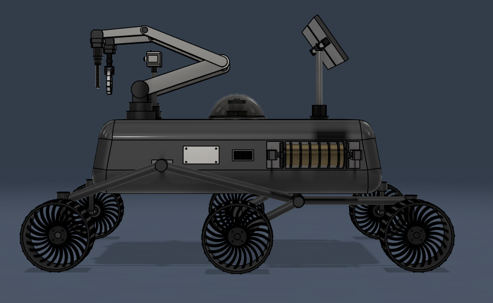

MECHANICAL ENGINEERING + PHYSICS // DOUBLE MAJOR
Designing, analyzing, and verifying mechanical systems.
Mechanical Engineering and Physics student at Stony Brook University with hands-on experience in precision inspection, CMM programming, mechanical assembly, 3D CAD, and engineering design.
01 // SELECTED WORK
A portfolio built to grow with my engineering career.
Featured work is separated into dedicated project and experience pages so new work can be added without the site revolving around one project.

EXODUS Mars Rover Platform
Independent Fusion 360 design with rocker-bogie suspension, robotic mechanisms, sensor systems, and engineering drawings.
Precision Inspection & Manufacturing
Hi-Rel engineering internship work involving CMM programming, Verisurf, dimensional inspection, assembly, and qualification data.
Future Projects
This section is intentionally scalable for motorsports, mechanical design, research, manufacturing, and future engineering work.
02 // CAPABILITIES
Mechanical engineering toolkit.
Design & CAD
3D CAD modeling, assemblies, engineering drawings, mechanical design, dimensioning, and tolerancing.
Inspection & Metrology
CMM operation/programming, Verisurf, measurement plans, datum alignment, and tolerance verification.
Manufacturing
Mechanical assembly, drawing interpretation, precision inspection, and manufacturing workflow exposure.
Software
Fusion 360, Verisurf, MATLAB, Python, Microsoft Excel, and Microsoft Office.
Analysis
Mechanics, applied mathematics, physics, engineering calculations, and technical problem solving.
Interests
Aerospace & space systems, robotics & mechatronics, mechanical design, advanced manufacturing, and precision engineering.
03 // EDUCATION
Mechanical Engineering + Physics.
Stony Brook University
B.S. Mechanical Engineering & B.S. Physics
Honor Roll • Expected May 2029Suffolk County Community College
Physics
Dean’s List • Honor Roll • GPA 3.8BOCES Electrical
Two-Year Electrical Trades Program
Connetquot High School